Manual de la app
Cómo se usa la app de Sysefen, paso a paso y por tipo de usuario. Las pantallas que verás aquí son de ejemplo, con nombres inventados; la tuya tendrá tus obras y tu gente.
Instalar y entrar
La app no se descarga de una tienda: es una página web que se guarda en la pantalla de inicio del móvil y funciona como una app, también sin cobertura.
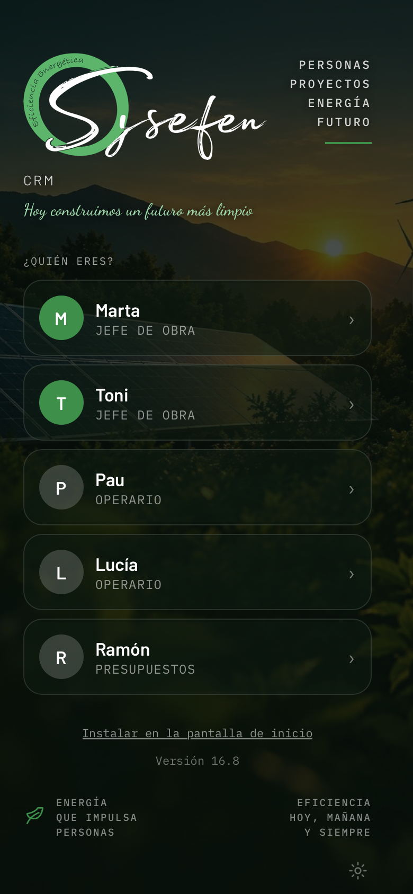
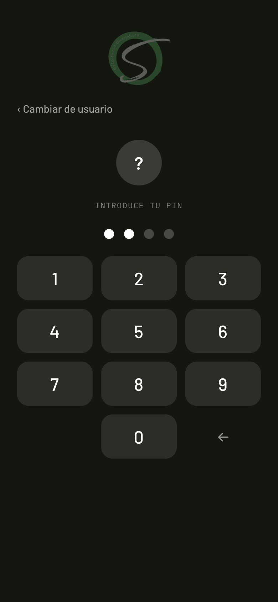
Instalar en el móvil
Cuando hay versión nueva
La app se mejora a menudo. Cuando hay una versión nueva, al abrirla sale un cartel oscuro que tapa la pantalla con un solo botón: Actualizar. Púlsalo. Tarda un segundo, no se pierde nada de lo guardado y así todo el equipo trabaja con la misma versión.
El cartel también sale si tenías la app abierta en segundo plano y la vuelves a abrir. No se puede seguir sin actualizar: es a propósito.
Qué ve cada usuario
Las pestañas de abajo cambian según quién eres. Nadie ve más de lo que necesita.
| Pestaña | Operario | Jefe de obra | Presupuestos | Administración |
|---|---|---|---|---|
| Hoy · fichar, resumen del día | Sí | Sí, con el equipo | — | Sí, sin fichar |
| Obras | Ver | Crear y editar | — | Crear y editar |
| Partes de trabajo | Solo los suyos, desde Hoy | Crear, firmar, enviar | — | Todos |
| Horas | Las suyas | Imputar al equipo | — | Revisar y corregir |
| Material y notas | Sí | Sí | Sí | — |
| Empleados y planillas | — | — | — | Sí |
| Agenda, clientes, visitas | — | — | Sí | Ver citas |
| Presupuestos | — | — | Sí | Sí |
| Perfil / Ajustes | Perfil | Ajustes | Perfil + Teamleader | Ajustes de la empresa |
Operario Tu día a día
Tu trabajo en la app son tres cosas: fichar al entrar y al salir, mirar tus horas, y apuntar el material que falta. Los partes los hace tu jefe de obra; tú solo tienes que fichar bien.
Fichar
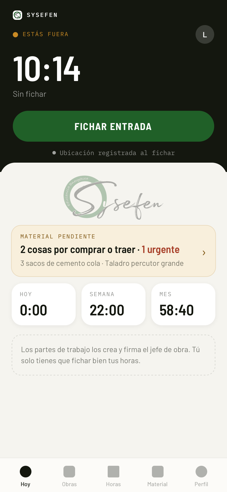
Hoy, antes de fichar
Arriba, en oscuro, la hora y Fichar entrada. Se guarda la hora exacta y, si está activado, dónde estabas al fichar.
Debajo: el material pendiente (amarillo si hay algo), y tus horas de hoy, esta semana y este mes.
- Ficha al llegar a la obra y al irte, no antes ni después.
- Si se te olvida, avisa a tu jefe o a Administración: ellos lo pueden corregir.
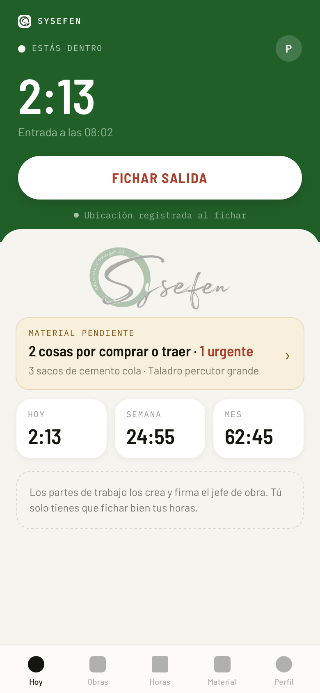
Hoy, dentro
La pantalla se pone verde y el reloj cuenta desde tu entrada. Al terminar, Fichar salida.
Si te vas a comer y vuelves, ficha salida y entrada otra vez: cada tramo cuenta.
Obras y horas
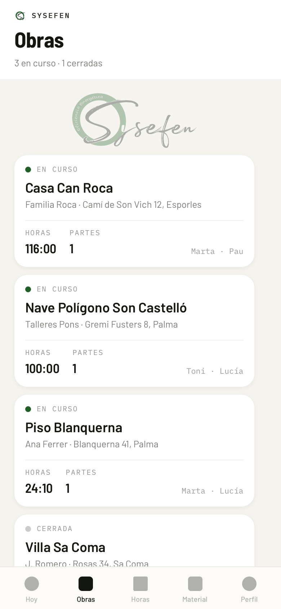
Obras
Las obras en curso y las cerradas, con las horas totales que llevan y cuántos partes tienen. Toca una para ver su ficha y quién ha trabajado en ella.
No hace falta elegir obra para fichar: las horas se reparten después.
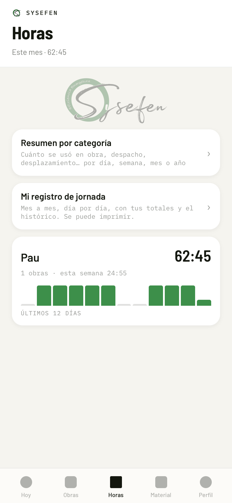
Horas
Tus horas del mes y de los últimos 12 días, en barras. Desde aquí:
- Mi registro de jornada: mes a mes, día por día, con tus totales. Es tu comprobante; se puede imprimir.
- Resumen por categoría: cuánto fue obra, despacho, desplazamiento…
Material y notas
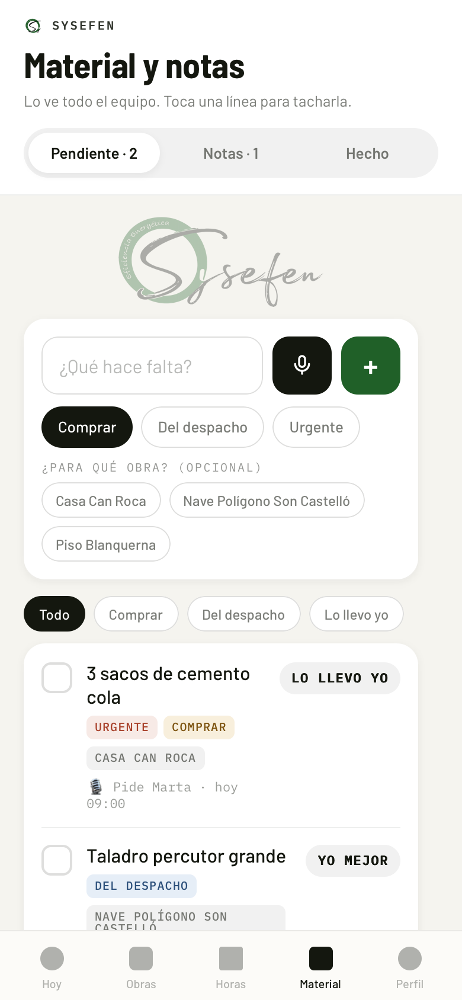
Lo que falta, lo ve todo el equipo
Escribe qué hace falta (o díctalo con el micrófono), marca si es Comprar o Del despacho, si es Urgente y para qué obra. Al pulsar + queda en la lista de todos.
- Lo llevo yo: te lo apuntas para traerlo.
- Cuando está, se tacha. Si se compró, se pone el importe y cuenta en la obra.
- Notas: avisos para el equipo ("la llave la tiene el cliente").
Perfil
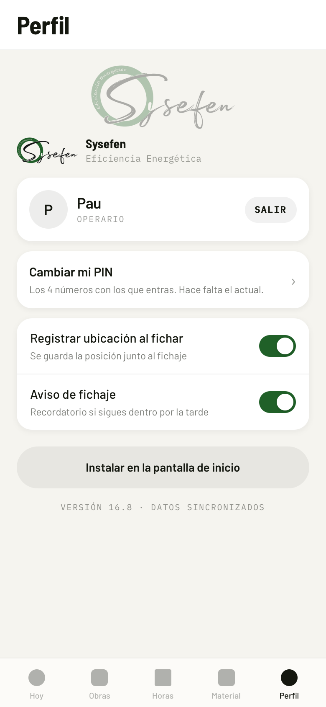

Jefe de obra Tu día a día
Haces lo mismo que un operario (fichar, horas, material) y además llevas las obras, los partes de trabajo que firma el cliente, y el reparto de horas del equipo entre obras.
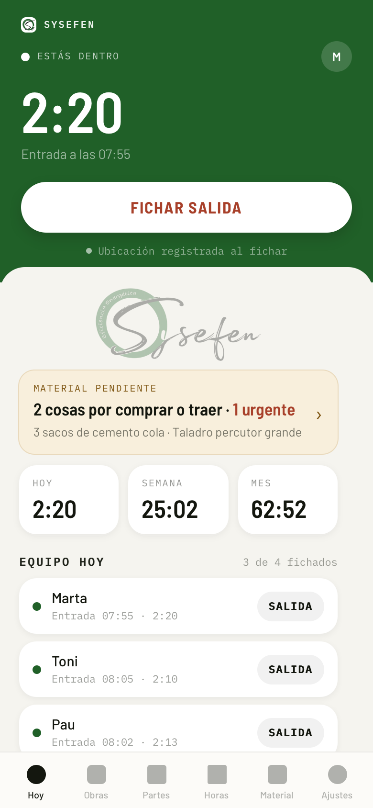
Hoy, con el equipo
Además de tu fichaje, ves quién está dentro ahora y desde qué hora, y puedes fichar la Salida a quien se haya olvidado.
Abajo, Nuevo parte: el atajo para hacer el parte del día.
Obras
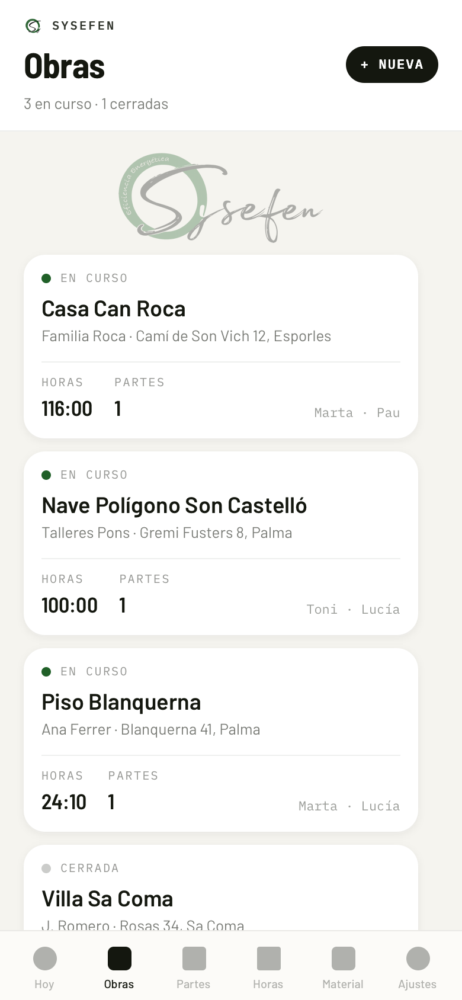
La lista
Todas las obras con sus horas y partes. + Nueva para crear una.
Una obra es un sitio donde se trabaja: tiene nombre ("Casa Can Roca"), cliente y dirección. Cualquier empleado puede trabajar en cualquier obra; las horas se asignan luego al imputar.
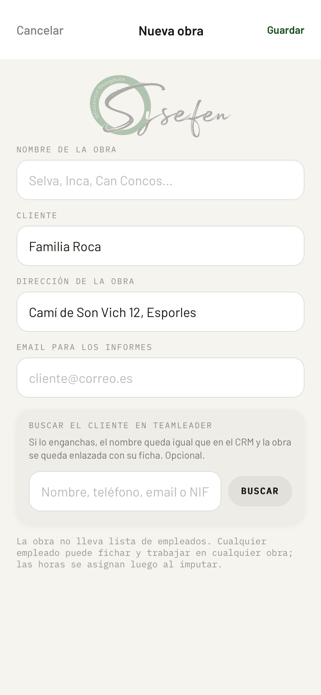
Crear una obra
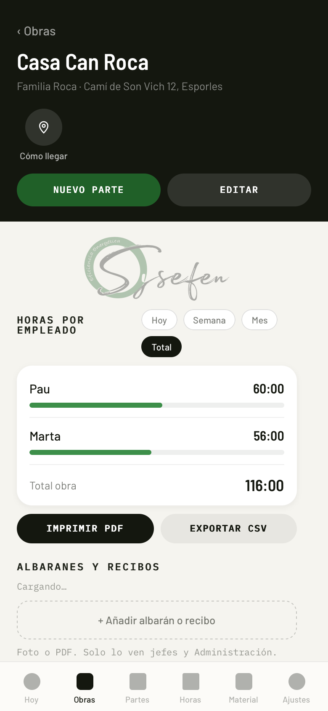
La ficha de la obra
- Cómo llegar abre el mapa. Nuevo parte y Editar.
- Horas por empleado: hoy, semana, mes o total. Salen los asignados y cualquiera que haya echado horas.
- Imprimir PDF y Exportar CSV del reparto.
- Albaranes y recibos: foto o PDF de lo que se compra para esa obra, con importe. Solo lo ven jefes y Administración.
Partes de trabajo
Un parte es el documento que dice qué se hizo un día en una obra, quién estuvo y cuántas horas, con la firma del cliente. Se manda por correo en PDF y queda guardado.

La lista
Cada parte con su número, fecha, obra, cuántos operarios y horas, y su estado: Firmado, Sin firma (el cliente no estaba), Enviado o Anulado. Si hubo incidencia, sale en rojo.
Botones: PDF, Compartir, Enviar por correo y Borrar.
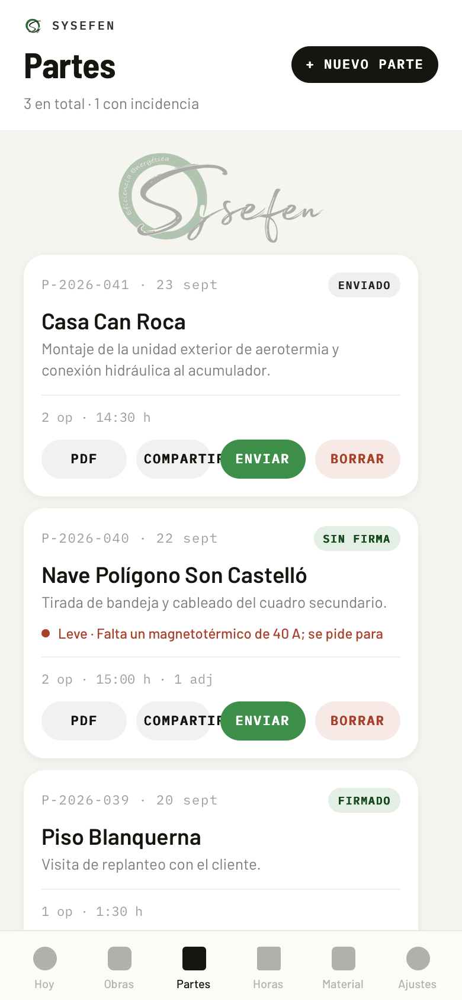
Crear un parte · elegir la obra
Al pulsar + Nuevo parte, primero eliges de qué obra es. Con muchas obras hay un buscador; si la obra no existe, + Nueva obra la crea sin salir del parte.
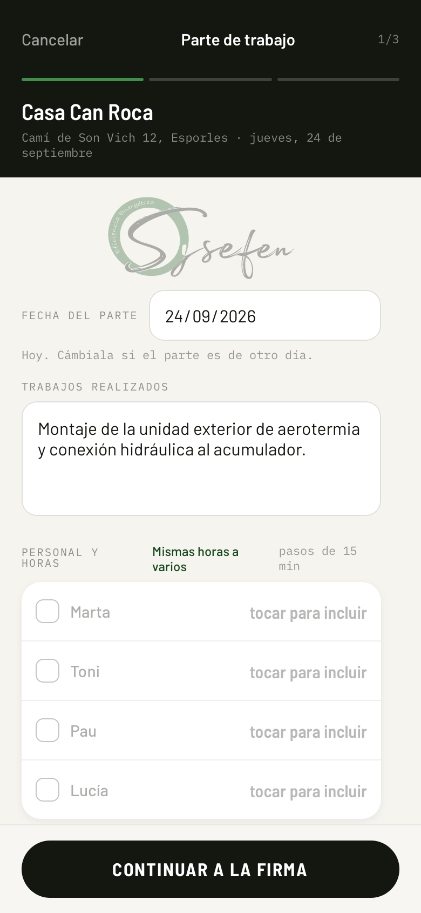
Paso 1 de 3 · El trabajo
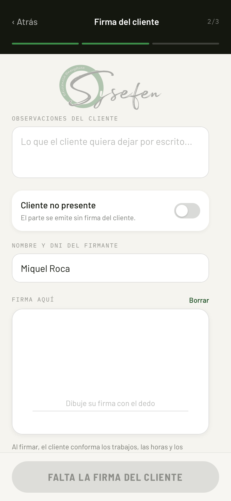
Paso 2 de 3 · La firma del cliente
El cliente puede escribir sus observaciones, pones su nombre y firma con el dedo en el recuadro.
Si el cliente no está, activa Cliente no presente: el parte sale sin su firma y lo dice.
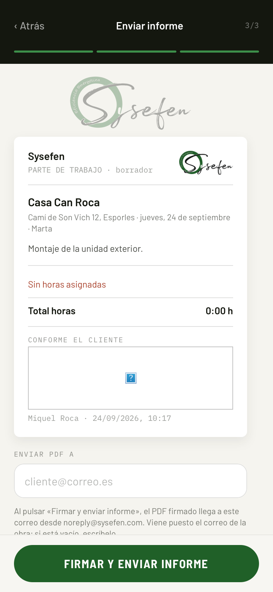
Paso 3 de 3 · Enviar
Ves el parte como quedará en PDF. Pon o comprueba el correo del cliente (viene el de la obra) y pulsa Firmar y enviar informe.
El PDF firmado le llega desde noreply@sysefen.com, con copia a la gestoría si Administración la ha puesto. El parte pasa a Enviado.
Si no hay cobertura, se guarda y lo envías después desde la lista.
Horas e imputaciones
Fichar dice cuándo se trabajó. Imputar dice en qué: en qué obra, en el despacho, desplazándose… Es lo que luego permite saber qué costó cada obra.
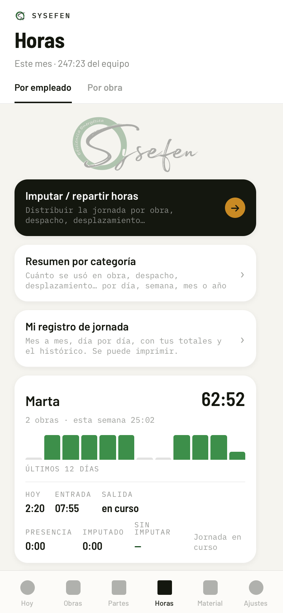
Horas · por empleado
Para cada persona: horas del mes, últimos 12 días, y hoy: entrada, salida, presencia, imputado y sin imputar. Lo que queda sin imputar es lo que hay que repartir.
Arriba, Imputar / repartir horas.
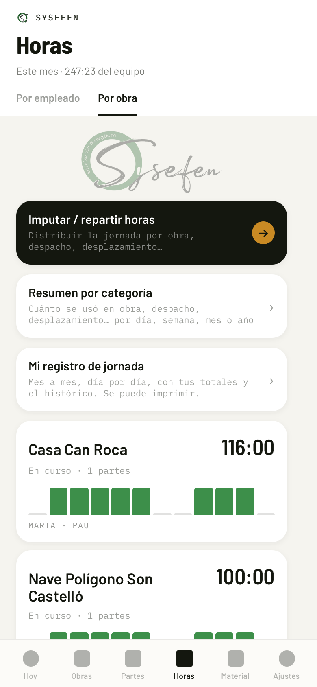
Horas · por obra
La otra vista: cuántas horas lleva cada obra y de quién. Es lo que se compara con el presupuesto.
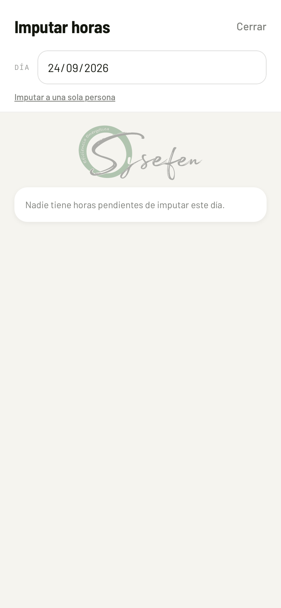
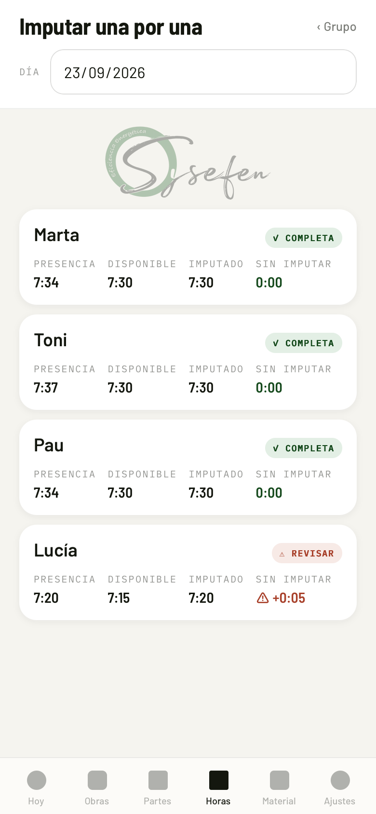
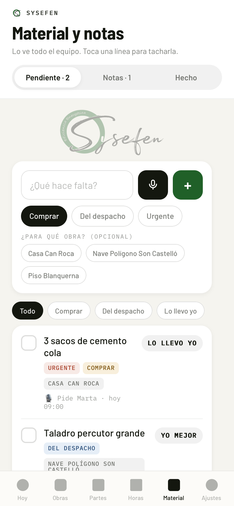
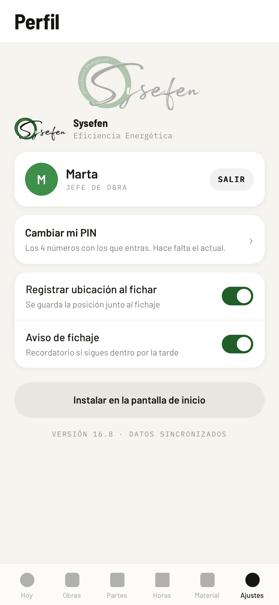
Presupuestos Tu día a día
Tu trabajo empieza con un cliente que pide presupuesto, sigue con una cita, una visita en la que tomas los datos, y acaba con el presupuesto, que sale del motor de la app y se sube a Teamleader. No fichas ni haces partes.
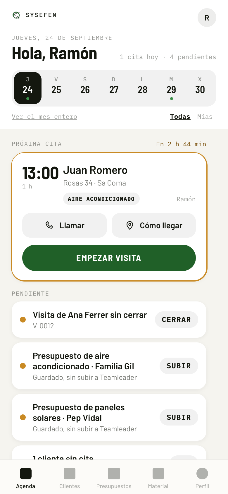
Agenda · hoy primero
- La tira de la semana: puntos en los días con cita. Toca un día para ver solo sus citas; Ver el mes entero abre el calendario.
- La próxima cita, en grande: Llamar, Cómo llegar y Empezar visita, que abre la toma de datos con el cliente ya puesto.
- Pendiente: visitas sin cerrar o sin subir, presupuestos sin subir a Teamleader, clientes sin cita. Cada línea abre justo eso.
- Debajo, las citas de los próximos días. Todas / Mías filtra si sois varios.
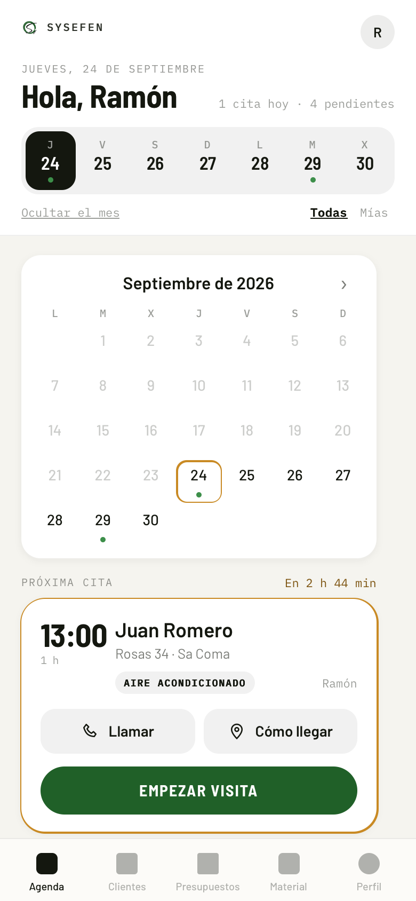
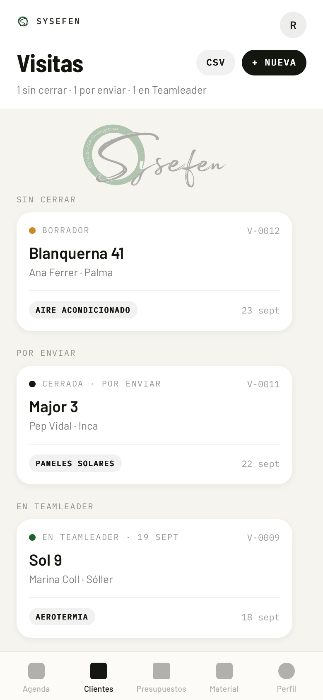
Clientes
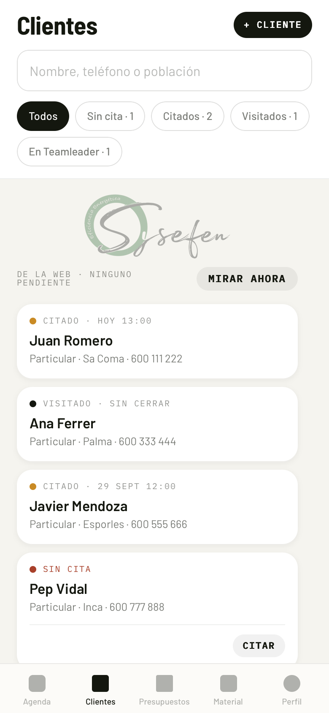
La lista
Todos los clientes de presupuestos, con su estado: Sin cita (rojo, hay que llamarle), Citado, Visitado (sin cerrar o por enviar), En Teamleader. Buscador por nombre, teléfono o población, y filtros.
Los que llegan de la web entran solos, sin cita: salen arriba con Mirar ahora.
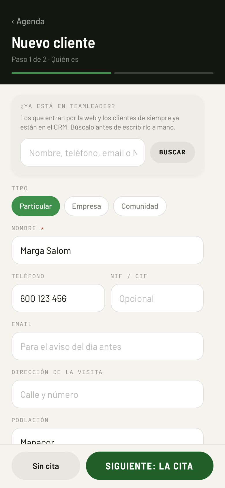
Dar de alta un cliente
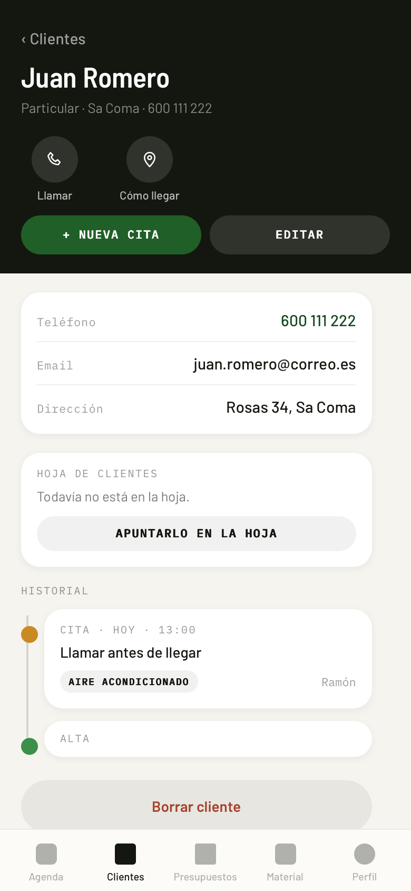
La ficha del cliente
Teléfono, email, dirección, si está en la hoja de clientes, y su historial: citas, visitas y presupuestos, en orden. + Nueva cita y Editar.
Abajo, Borrar cliente: solo si no tiene visitas ni presupuestos.
Citas
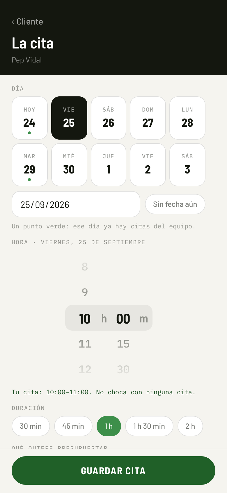
Poner una cita
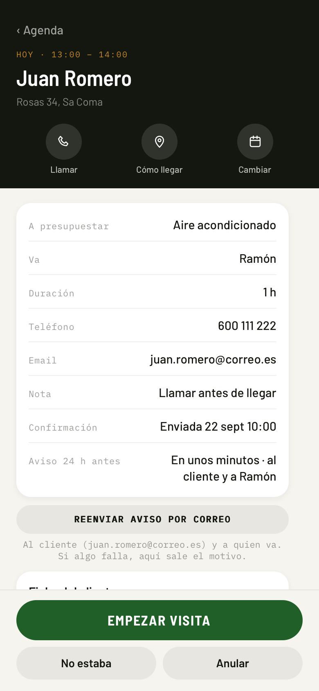
La ficha de la cita, y los correos
Todo lo de la cita y tres acciones: Llamar, Cómo llegar y Cambiar. Abajo: Empezar visita, No estaba y Anular.
Los correos al cliente salen solos: la confirmación al crear la cita, el recordatorio 24 horas antes, el cambio si se mueve y la anulación si se anula. Llevan un botón para añadirla a su calendario. La ficha dice cuándo salió cada uno.
Si algo falla (el cliente no tiene email, por ejemplo), la app lo dice en rojo. Reenviar aviso por correo lo vuelve a mandar y enseña el motivo si no puede.
Visitas: la toma de datos
La visita es donde tomas en casa del cliente todo lo que hace falta para presupuestar: el inmueble, la instalación que tiene, lo que quiere, fotos y medidas. Va en 5 pasos y se guarda sola en el móvil mientras la haces, con o sin cobertura.
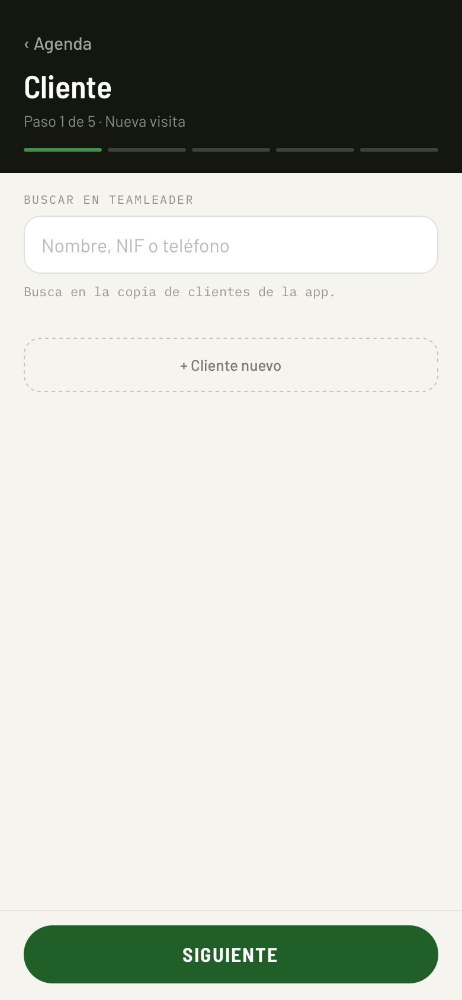
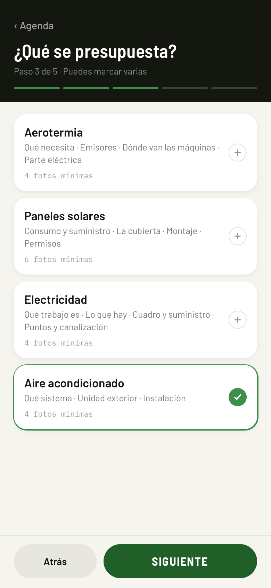
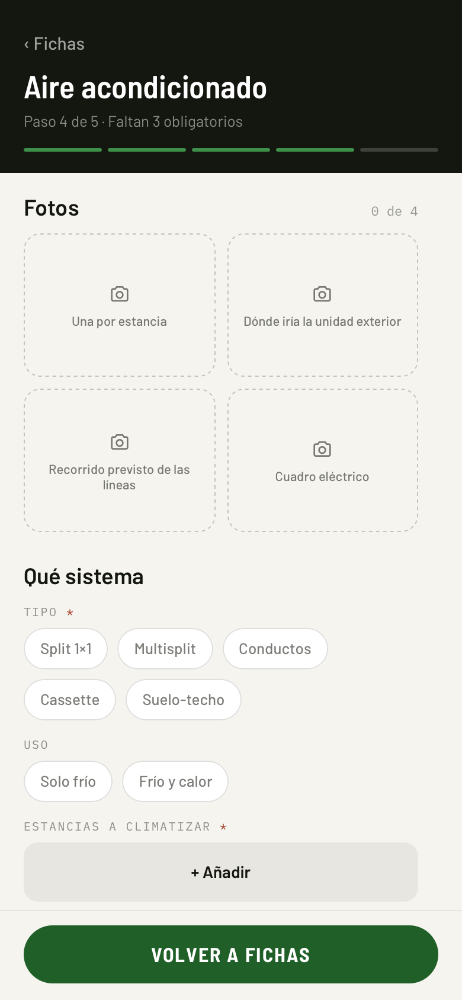
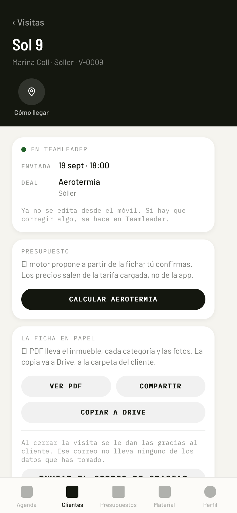
5 · Cierre, y después
Al cerrar la visita, el cliente recibe un correo de gracias (una sola vez, sin ningún dato de los que tomaste). La visita sube a Teamleader como oportunidad, con sus fotos.
En la ficha de una visita ya cerrada:
- Calcular… un presupuesto de cada oficio con la ficha.
- PDF de la visita: primero se ve, y desde ahí se comparte.
- Copiar a Drive: el PDF y las fotos a la carpeta del cliente.
Una visita que te quedó a medias sale en la Agenda, en Pendiente, para seguirla.
Presupuestos
El presupuesto lo propone el motor a partir de los datos y de las tarifas cargadas (Vaillant, Saunier Duval, Midea, Fronius, Enphase, BYD, Tesla…). Tú lo revisas, cambias lo que haga falta y lo guardas. Al guardar sube solo a Teamleader.
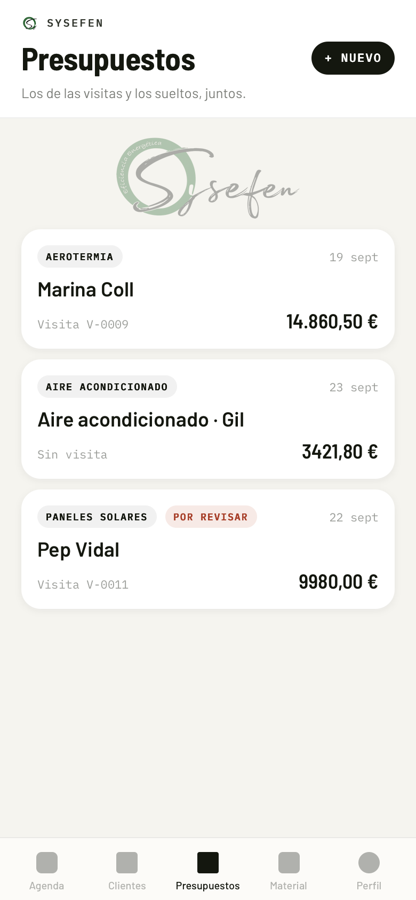
La lista
Los de las visitas y los sueltos, juntos: oficio, cliente, visita si la hay, importe sin IVA y estado. Por revisar significa que al motor le faltó algún dato: ábrelo y mira los avisos.
+ Nuevo hace un presupuesto suelto, sin visita: por teléfono o para un cliente de siempre.
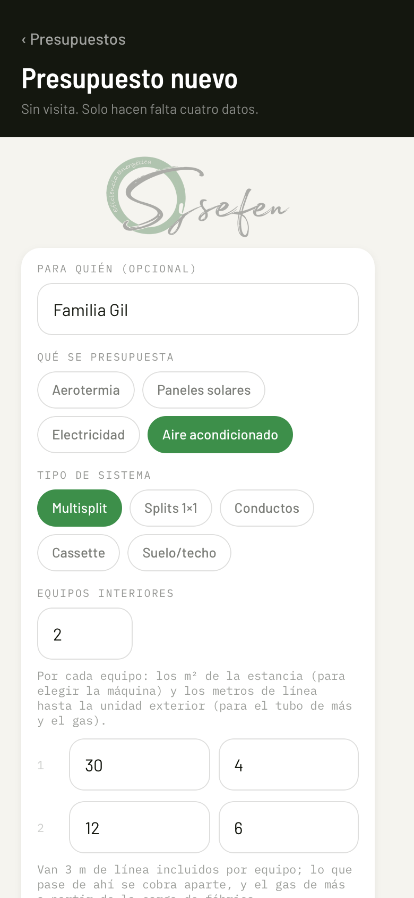
Presupuesto suelto
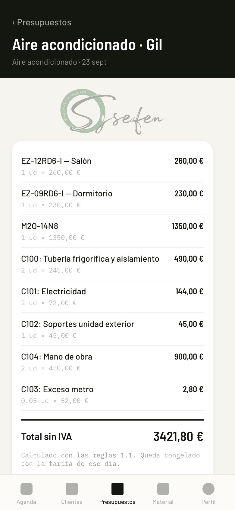
La ficha de un presupuesto
- Las líneas con cantidad, precio y, en las máquinas, su detalle técnico. Las de cada estancia lo dicen ("— Salón").
- PDF: lo ves, y desde ahí compartes.
- Modificar: cambia concepto, cantidad, precio, quita o añade líneas, descuento. El servidor vuelve a sumar. Lo que cambies de una línea del motor queda apuntado: así se afinan las reglas.
- Si no está en Teamleader, Mandar a Teamleader; si algo falló, el error sale debajo.
Teamleader y la hoja de clientes
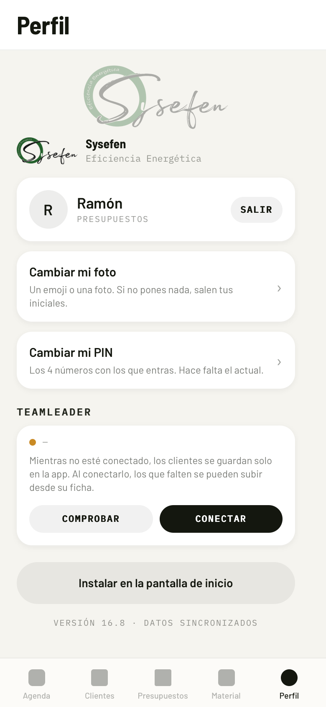
Conectar Teamleader
En Perfil → Teamleader: Conectar abre Teamleader para dar permiso, una vez. Desde entonces la app crea y lee clientes, sube visitas como oportunidades y presupuestos como ofertas.
Si el permiso caduca, la app te lo dice y vuelves a conectar aquí. Comprobar dice si sigue vivo.
Qué va a dónde
| En la app | En Teamleader |
|---|---|
| Cliente | Contacto o empresa |
| Visita cerrada | Oportunidad (deal), en el embudo de su oficio, con las fotos |
| Presupuesto guardado | Oferta dentro de esa oportunidad, y el PDF en sus archivos. No se manda al cliente: eso se hace desde Teamleader. |
Administración Tu día a día
Administración no ficha. Ve y corrige lo de todos: fichajes, imputaciones, empleados y sus planillas, obras, partes, citas y presupuestos, y los ajustes de la empresa.
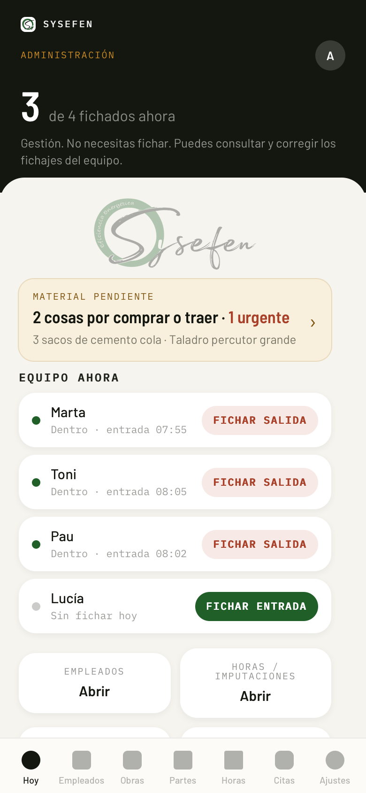
Hoy
Cuántos están fichados ahora y quién. Puedes fichar la entrada o la salida a cualquiera (el que se olvidó, el que sigue "dentro" a las diez de la noche). Accesos directos a todo lo demás.
Empleados y planillas
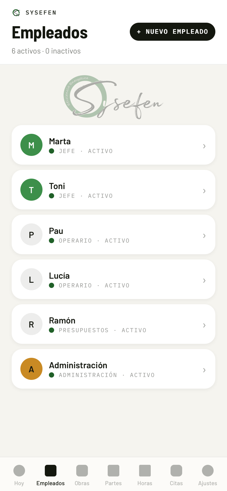
Empleados
Todos, con su rol y si están activos. + Nuevo empleado.
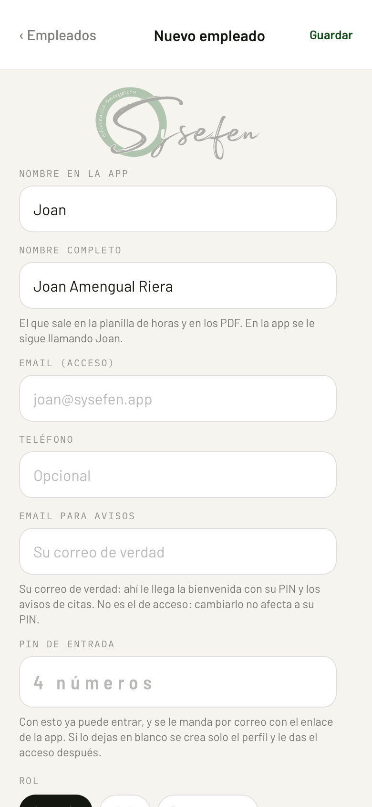
Dar de alta
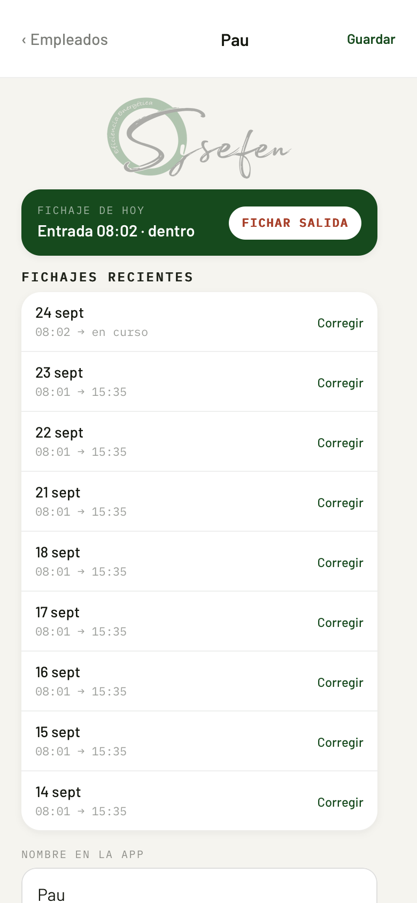
La ficha
Su fichaje de hoy (y el botón para cerrarlo), los fichajes recientes con Corregir en cada uno, sus datos, su PIN, y abajo: Planilla de horas, vacaciones y darle de baja (queda inactivo, no se borra nada).
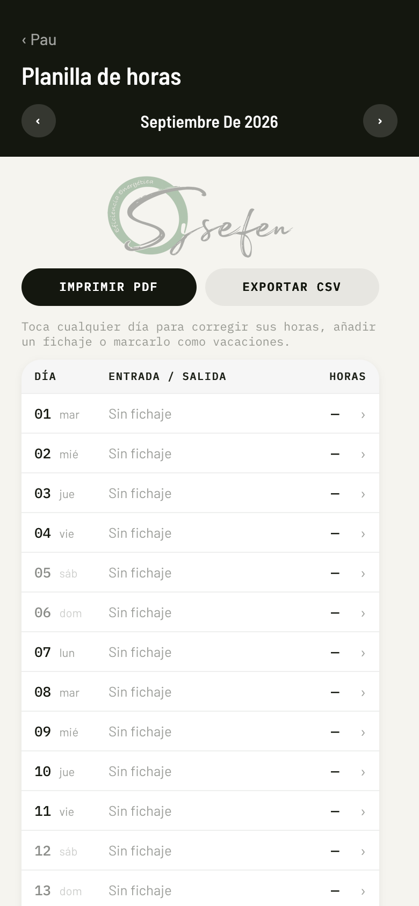
La planilla de horas
El registro de jornada del mes, día por día: entrada, salida y horas. Toca un día para corregir sus horas, poner vacaciones o marcarlo como festivo o baja.
Imprimir PDF saca la planilla oficial (con la firma del empleado si la firmó desde su móvil) y Exportar CSV para la gestoría. Las planillas firmadas se guardan también en Drive.
Horas, revisión y copias
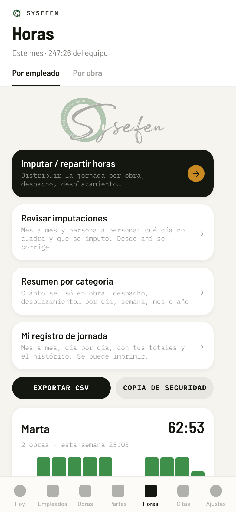
Horas
- Imputar / repartir horas, igual que un jefe.
- Revisar imputaciones: mes a mes y persona a persona, qué día no cuadra (fichado ≠ imputado) y qué se imputó. Desde ahí se corrige.
- Resumen por categoría y mi registro.
- Exportar CSV de todo y Copia de seguridad (un archivo con todos los datos, para guardarlo aparte).
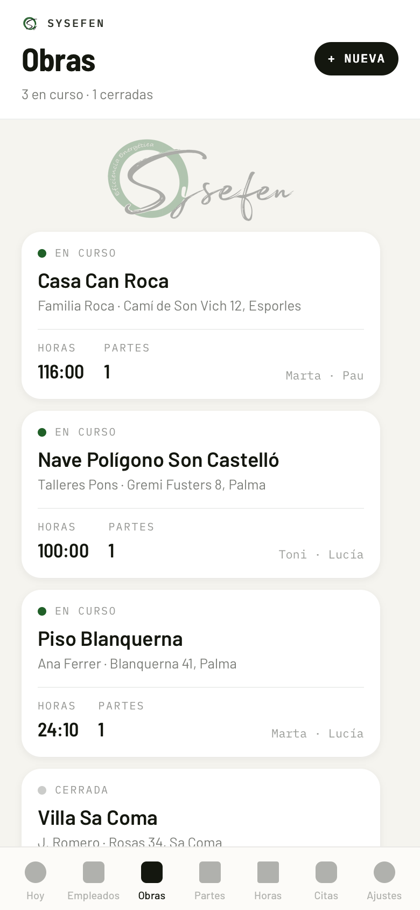
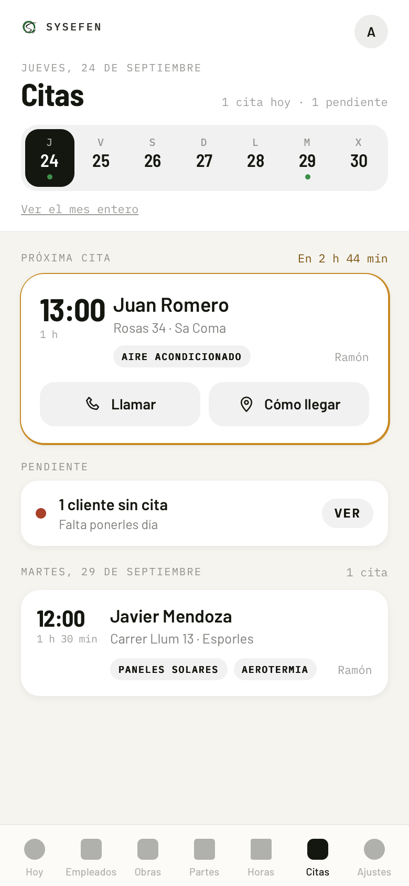
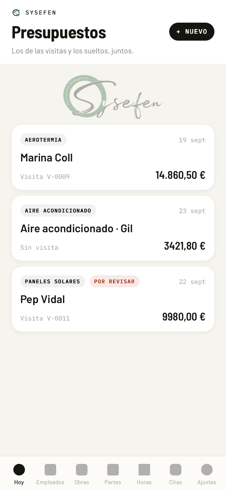
Ajustes
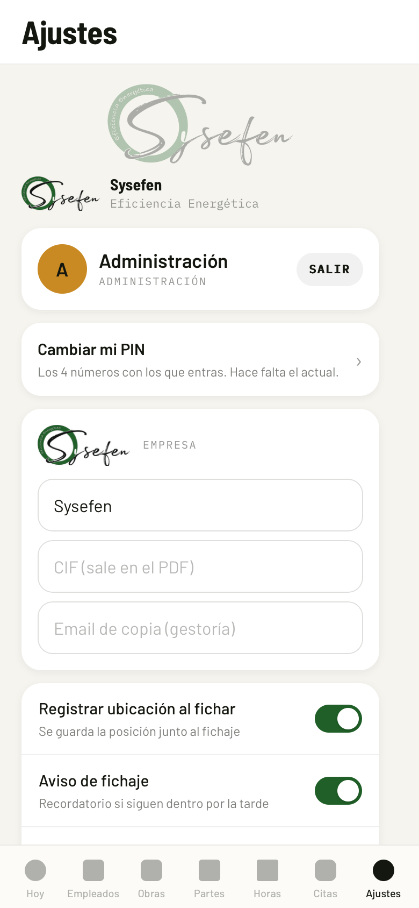
Los de la empresa
- Nombre de la empresa y CIF: salen en los PDF.
- Email de copia: la gestoría o administración recibe copia de cada parte enviado.
- Ubicación al fichar, aviso de fichaje y si los operarios ven importes.
- Errores de la app: lo que ha fallado en los móviles, para revisarlo.
- Importar histórico de fichajes desde un CSV.
Si algo no va
| Pasa esto | Qué hacer |
|---|---|
| Sale una franja "Sin conexión" arriba | No hay cobertura. Todo lo que hagas se guarda en el móvil y sube solo al volver la red. Fichar, sí funciona. |
| Se me ha olvidado fichar la salida | Díselo a tu jefe o a Administración: en Hoy pueden fichártela, y en tu ficha corregir la hora. |
| No me acuerdo del PIN | Administración te pone uno nuevo desde tu ficha de empleado. |
| La app se ve distinta a la de un compañero | Uno de los dos no ha actualizado. Cierra la app y ábrela: saldrá el cartel de Actualizar. |
| El PDF no se comparte por WhatsApp | Primero se ve el PDF; desde ahí, Compartir. Se manda solo el archivo, sin texto. |
| El presupuesto sale "Por revisar" o con avisos | Al motor le faltó un dato o hay algo que no cuadra (una batería que no va con ese inversor, una estancia demasiado grande…). Los avisos lo dicen; corrige la ficha o añade la línea a mano. |
| "El permiso de Teamleader ya no vale" | Perfil → Teamleader → Conectar otra vez. |
| El correo de la cita no le llegó al cliente | Abre la cita: dice si se envió y cuándo. Si el cliente no tiene email, pónselo en su ficha y pulsa Reenviar aviso por correo. |
| Un cliente no está en la hoja de clientes | En su ficha, Apuntarlo en la hoja. Los que se crean desde la app van solos. |